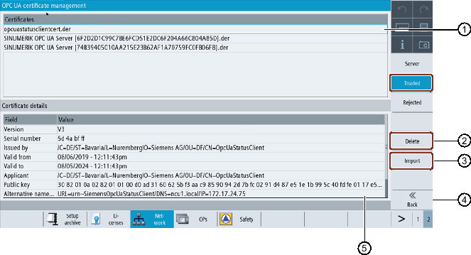

Overview
① | The trusted certificates are listed in the upper part of the screen. You can select a certificate using the arrow keys (cursor up/ cursor down). |
② | You can delete the trusted certificates. |
③ | You can import a certificate from an USB device. |
④ | You can leave the OPC UA dialogs. |
⑤ | The certificate details are shown in the lower part of the screen. To set the focus on the lower part of the screen the softkey "next window" on the keyboard is used. |
Trusted Certificate
Deleting trusted certificates
To manually delete a client certificate, select a certificate in the trusted list and press the softkey "Delete".
A pop-up screen will appear asking you for confirmation of deletion:

Delete certificate
Pressing the softkey "Cancel" will do no action and return to "Trusted" dialog.
Pressing the softkey "Ok" will delete the selected certificate.
Note After the deletion of the client certificate a connection with OPC UA server can no longer be established by the client of the corresponding certificate.
Importing certificates
To prepare a connection a client certificate can be imported before actually establishing a connection. With the import the certificate is automatically trusted.
Press the softkey "Import".
A pop-up screen will appear showing the SINUMERIK filesystem to import from. You can navigate to a location on the SINUMERIK filesystem to import a certificate to a trusted folder.
Pressing the softkey "Cancel" will ignore all input and return to the "Trusted" dialog.
Pressing the softkey "Ok" will import the certificate.
| Note |
Only certificates with the file extension "*.der" are accepted. |
| Note |
To use a certificate for authentication it is necessary to create a user with the method "AddCertificateUser" first. |